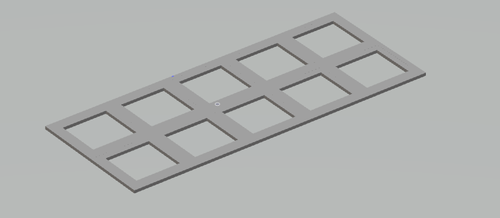
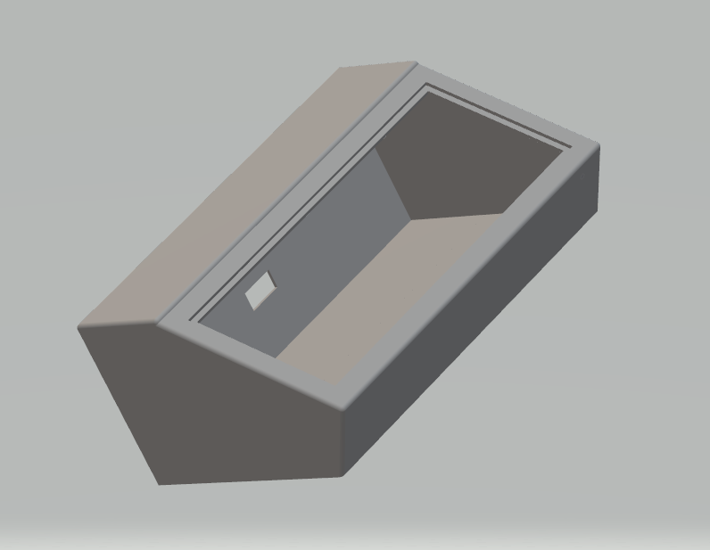

This particular project was designed to help productivity when navigating your PC. When developing the code as well as the original 3d models, it had to have minimalistic view as well as easy upgradable if need be. The following image is what was the result that design mind set.
 The goal of this product is to sell it. I am currently working with a Chinese CNC manufactures to reproduce this particular case for mass production and hopefully have a product by 2023. There are some issues when dealing with a products that have a unique shape like I have created here. I am hoping to find a manufacture who is able to CNC on 5-axises (the best solution for this design). Due to the manufacturing method and the design it self, this will be a easy transition to the newer process we are looking at with CNC aluminum. Will be posting updates soon.
The brains of this product is run on a Arduino framework (C++). The current code is designed so that you can always replace the existing macros and also works with 3rd party re-mapping software. I am also communicating with JLCPCB to stream line the board processes as well as make it cheaper for purchase.